This chapter is dedicated to mod authors, and describes a number of functions and actions that FO3Edit provides to make mod authors lives easier and their products more standardized. Like the chapter on Mod Cleaning and Error Checking, these functions hole mod authors produce products that will be less conflicting with other mods, and will open doors to possibilities that mod authors may not have known existed. Actions like merging mods, splitting them apart into Plug-in/Master pairs, adding Master file references and more are documented in the sections below.
6. Managing Mod Files
6.1 Overview
6.2 Adding Master Files to a Plug-in
To reference a record from ExampleMaster.ESM in Plug-in.esp you need to add ExampleMaster.ESM to the MASTer list in the File Header of Plug-in.esp. This allows the plug-in to add/change items found in the ExampleMaster.ESM. FO3Edit does this by adding a new master to the MAST sub record in the file header and correctly renumbering the FormIDs in the module. This can be very handy for mod authors, as it simplifies the process down to a few mouse clicks, so the mod author can focus on more important things like modding!

In this example we showcase Saiden Storm’s Weapon Effects mod and the taylorsd’s Better Frag Grenade Physics mods, two excellent enhancements to Fallout3. Here we will add the SS Weapon Effects.esm Master file to the Better Frag Grenade Physics plug-in, so that we can add one of Saiden Storm’s cool plasma blasts to a frag grenade for kicks! To start the action, select “Add Masters” from the context menu as shown:

This will present the File selection menu, from which you can Check the Master file(s) that you want to add as references in the Plug-in’s header as shown:

Once FO3Edit adds the master file as a reference in the Plug-in, you see results similar to the screenshot below showing the Messages Tab log-entry:
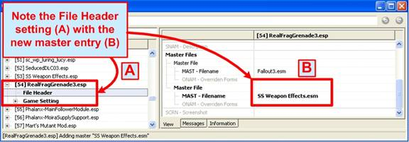
Note that “SS Weapon Effects.esm” has now be added to RealFragGrenade3.esp, making it possible to attach one of Saiden Storm’s Weapon Effects explosions to the grenade effect in Better Frag Grenade Physics. The View Tab shows the specific entry:
Note: If you plan to release a mod to the public, then you should ONLY do this with permission from the modauthor, in this case Saiden Storm. If you wanted to use his weapon effects in a mod of your own and release it, you need permission!
Below Elminster describes why this function is important for mod authors wanting to add master file references to their own mods:
“With FormIDs it's important to realize that the FormIDs that FO3Edit shows you are NOT the ones that are actually written into the module file. The FormIDs that FO3Edit shows you are "load order corrected" ones, while the FormIDs in the file itself are "file specific" ones.FormIDs are made up of 2 parts, the first byte (2 characters) is the "module index", the last 3 bytes (6 characters) are the "module specific ID".
Mapping from "file specific" to "load order corrected" FormIDs and back only affects the "module index" and leaves the "module specific ID" untouched.
An example, suppose you got a bunch of modules loaded:
- [00] Fallout3.esm
- [04] MasterA.esm
- [10] MasterB.esm
- [15] MasterC.esm
- [20] Plug-in.esp
And lets suppose the MAST sub record in the File Header of Plug-in.esp lists:
- Fallout3.esm
- MasterB.esm
- MasterA.esm
If you now see a record in Plug-in.esp that overrides a record from Fallout3.esm, then you would see a FormID like 00123456 for it. In this particular case that record would also have the same (00123456) FormID inside the Plug-in.esp module file.
But if you have a record that overrides a record from MasterA.esm, e.g. with a FormID like 04ABCDEF (you can see the 04 as "module index" matches the load order of MasterA.esm) then it would be saved as 02ABCDEF in the Plug-in.esp module file, because 02 is the index of MasterA.esm in the list of MASTer files in the File Header of Plug-in.esp.
And an override for a record in MasterB.esm (e.g. 10654321) would be saved as 01654321 in the Plug-in.esp module file because 01 is the index of MasterB.esm in the list of MASTer files in the File Header.
Last but not least, a NEW record in Plug-in.esp which belongs to Plug-in.esp and which FO3Edit would show you e.g. as 20FEDCBA gets stored as 03FEDCBA in the file (because 03 is equal to the number of entries in the MASTer list, as indices into that list start at 00, 03 is one higher then the highest valid index into that list).
You will also notice that it's not possible to have an override record for a record from Master3.esm in Plug-in.esp or in any other form reference such a record, because there is no way to map a load order corrected FormID of 15A1B2C3 to a file specific one that's valid in Plug-in.esp.
To reference a record from Master3.esm in Plug-in.esp you need to add Master3.esm to the MASTer list in the File Header of Plug-in.esp. But if you just go there and do that manually, then you've just added Master3.esm with the index 03 to the file. Which means that all the records that used to belong to Plug-in.esp are suddenly considered override records for records from Master3.esm and will show up with 15xxxxxx FormIDs instead of 20xxxxxx FormIDs! A real mess.
If you instead use the Add Masters function, then FO3Edit will not only add then new entry into the MASTer list, it will also renumber all (file specific) 03xxxxxx FormIDs into 04xxxxxx FormIDs first to preserve their meaning (which is "this record belongs to this file").
There are rare cases where editing the MAST list directly is what you actually want. e.g. when splitting an .esp into an .esm/.esp pair. In that case you would make a copy of the .esp, rename it to .esm, load it alone into FO3Edit to set the ESM flag in it's header, then restart FO3Edit to load both the .esm and the .esp and modify the MAST sub record in the File Header of the .esp by adding the .esm as last entry. After restarting FO3Edit and loading both files you will see that all records in the .esp are now considered overrides for the same records from the .esm”
6.3 Changing Mod FormIDs
There are times in which you may need to renumber the FormIDs for all records in a plug-in to avoid conflicts. This can become necessary if two plug-ins share the same FormIDs (or some of them), which can result in bad conflicts in-game. Renumbering FormIDs from will change all FormIDs of records belonging to the Mod-file (but not any override records which might be contained in that mod file) so that they start at the specified value.
This Function is useful if you have multiple modules that you plan to update in the future, but also want to always provide a merged version (e.g. using FO3Plug-in). By assigning non overlapping FormIDs to the different modules, you can make sure that no FormID reassignment of conflicting FormIDs has to take place when merging.

To renumber the FormIDs of a Mod file, Right-click on that mod file in the Left-hand Panel to present the main context menu (A). Then select, “Renumber FormIDs from…” from the menu as shown in the screenshot below:
When selected, the function will present a, “Start from…” window asking you what number you want to start the renumbering at as shown below.

Normally a FormID is 8 characters long, with the first 2 representing the mod file’s index and the last 6 the reference’s specific index within that specific mod. Thus pick a number between 100000 and FFFFFF in hex:

Once the new module specific start FormID (in hex) has been input (A) and the OK button selected (B), FO3Edit will begin changing the FormIDs and present the output in the Messages Tab as shown in the screenshot below:
When changing the FormIDs of a huge mod like Reykjavik by Alexander Sigurðsson, the process took 3-4 minutes on a high-end computer. The results shown in the Messges Tab reveal just a few examples of FO3Edit renumbering a FormID, discovering all references to it in all mod files, and correcting the numbering to prevent conflicts.
Note:Changing the FormIDs of an existing module will make it SaveGame incompatible and will break any other module that uses this module as master! If you have any dependant modules, you need to have them all loaded into FO3Edit at the time you change to FormIDs so that they will all be updated accordingly.
6.4 Merging a Plug-in into another Plug-in or Master

One of the common tasks that many mod authors face is the need to merge mod files together into a single plug-in or master file. Many mod players also like to merge all of their favorite plug-ins into a single master file (one modder affectionately calls it, “BORG.esm”). FO3Edit can be used to accomplish both of these needs, and will ensure that the resulting plug-in is synchronized correctly against it’s combined references, and that the load orders are correct. The process is illustrated below, starting with loading FOMM and ordering the files correctly as shown below:
In this example we will be merging Skykappa’s Destructible Building Materials 3000 ( WIPz) (here-after referred to as DBM 3000) into the 500 Rads Bar (WIPz), so that the Bar can utilize the destructible building materials. Note that Skykappa’s DBM 3000 is a modders resource, and was released by the author to be used in other mods for the low price of mentioning in the mod’s credits.
Load order is important when merging mods together, mainly because FO3Edit is very precise about the numbering and order of FormIDs and references amongst mods. Its is Very easy to conflict the FromIDs of mods being merged together (as is discussed at depth below). As such FO3Edit requires us to place the mod that is receiving the content (A) Below the mod being assimilated (B) in the load-order of FOMM. This is important, but if you get it wrong don’t worry, FO3Edit will warn you about it (also shown below).
You can also merge many mods into one at once, you don’t have to do it one-by-one if you happen to have several mods that needs to be combined together (as in when a modder lumps everything into one giant BORG.esm). The only requirement is that the assimilator (BORG.esm) is at the bottom, below the assimilates. Once you have the load order correct, exit FOMM to save the load order.

Now launch FO3Edit, which should offer the list of mods in the correct order with the assimilator at the bottom as shown below:

Note the load order is exactly as we specified in FOMM. If everything is checked, you can always Right-click in the Master/Plugin Selection window and click, “Select None” to clear all the checks. Then select the assimilator and assimilatees (A). Click okay to load the mods into FO3Edit (B), which yields the following output:
Note how the only files loaded are the main Fallout3 master files and the mod files we are merging together (B and C). We are now in a position to merge the DBM 3000 into the 500 Rads Bar!
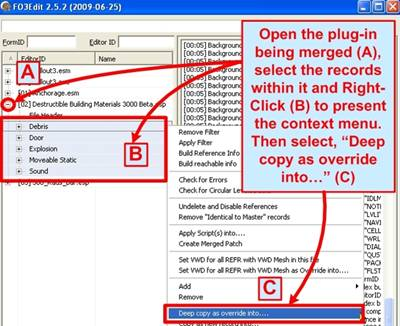
To execute the merger, first open the assimilatee’s (mod being copied) by Left-clicking on its plus sign (A), and then selecting all of the record headings within the mod (B) using the mouse and the shift-key. Next Right-click at (B) to render the context menu, and select, “Deep copy as override into…” (C) As shown below:

This action performs our traditional, “Copy” of the material we want to merge, and will present you with a menu option where you can select the file you want to merge these records into (our traditional, “Paste”):
When presented with the, “Which files do…” menu, select the mod that you want to Paste the content into (A), and select OK to perform the merge (B). You may be prompted to add the copying mod as a master, select, “Yes” to this (C).
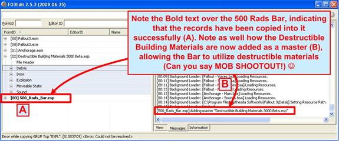
You will now be presented with the output, which can be seen in the Messages Tab:
Note how the 500 Rads Bar now has Bold text over its name, indicating that new records have been copied into to and that it is marked as modified (A). The Messages Tab displays the output of any master connections we made during the process (B), and any errors that may have occurred (none in this example).
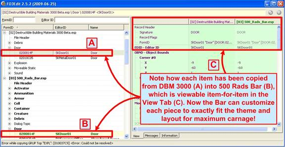
If you now open the two mods, you will see how the references from DBM 3000 are duplicated into 500 Rads Bar. Each record can be seen in the View Tab down to the variable and reference level, as shown below:
Each record can be compared in the View Tab as desired; showing that each has been copied into the 500 Rads Bar and will now save as part of that plug-in. Any errors that occur will show up in the Messages Tab, and may likely prevent a merger from taking place. If you see errors in the Messages Tab, you should assume that the mods did not merge and you’ll need to address the errors noted.

With the merger complete, it’s time to save our newly-combined mod file! This is done most conveniently by hitting, “Alt-S” or closing FO3Edit. Either will present you with the Save Changed Files window as shown below:
Simply ensure the mod you just merged together is Checked for saving (A), and click “OK” to save the mod. Also note that the only file FO3Edit wants us to save is 500 Rads Bar, while DBM 3000 is not shown. This is correct behavior, indicating that we copied stuff into 500 Rads Bar and effectively did nothing to DBM 3000.

If you get the load order wrong in FOMM when trying to merge two mod files, FO3Edit will present you with the following error:
Note that the error is very specific about the load-order issue, in an attempt to better guide you into the right load order for whichever mods you are trying to merge. If you see this error, exit FO3Edit, correct the mod load-order in FOMM, re-launch FO3Edit and perform the merger operation again.
If you don’t see any errors through the process or after saving, exit FO3Edit and either test the combined mod file or load it up in the GECK so you can start adding destructible building materials to your mod! Have a nice day, thank you for playing.
6.5 Converting a Plug-in into a Master

Converting a Plug-in (ESP) into a Master (ESM) file is a simple process that can be doing using FO3Edit in less than five minutes. The file extension of a Plug-in as well as the ESM flag within its file header must be changed in order to make the transition to a Master file. The screenshot below starts the action by launching FO3Edit:

First you need to de-select all of the mods using Right-click in the Master/Plugin Selection window (A). Then click/check just the mod your converting (B), in this example we’re converting Antistar’s Weapon Mod Kits plug-in into a master file. Click “OK” (C) to load FO3Edit with just the mod being changed as shown:
Note that Weapon Mod Kits is successfully loaded into FO3Edit (B), and that it is the only file listed aside from the Fallout3 master files (A). You are now ready to convert the Plug-in into a Master file.

To make the conversion, all we have to do is change one flag in the File Header, which can be accessed by Left-clicking open the Weapon Mod Kits record in the Left-hand Panel. Immediately beneath name of the mod is the File Header row (A) as shown below. You will then see the File Header data printed into the View Tab (B):
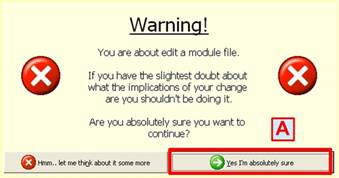
The File Header record is divided into different sub-headings and variables, including the Record Flags, Version, Author, mod Description and any Master file references that the plug-in requires. We will be changing the Record Flags variable by Right-clicking into the open space next to it (C), which will render a small context menu. You can then click, “Edit” (D) to change the values. Doing so will present a warning window as shown below:
This window is a default/standard in FO3Edit, and exists to make sure that anytime you are about to change a mod file for the first time, you know about it. It may seem annoying to some, but often the worst conflicts between mods come from changes that a mod author did not intend to make. Simply select, “Yes” (A) to move along.

You will next be present with a menu of available/known flags that you can select:

Note that many of the flags are blank or unknown, because literally the community does not know what those flag values mean. Fortunately the flag we need is the first one on the list (A), simply Left-click it and then click, “OK” to save the flag settings.
With that you are done! Note the File Header text is now Bold (A) indicating a change, and the Record Flags in the View Tab (C) show that the ESM flag is set (B).
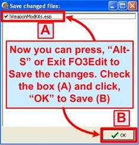
Once done with FO3Edit, you will want to change the file extension from Weapon Mod Kits.esp to Weapon Mod Kits.esm so that the extension matches the File Header flagging. The GECK and Fallout3 don’t really care about the file extension (ESP/ESM), what matters is that File Header flag. The Extension is for humans to keep them sorted correctly! Now all you need to do is exit FO3Edit or press, “Alt-S” and Save your new Master file as shown below:
It is also possible to change a Plug-in to a Master using just FOMM or other tools, but there is always the potential of problems with ONAM records. ONAM records are special records created that allow Master files to communicate with one-another when references need to be passed. FO3Edit ensures that as part of the conversion process, these ONAM records are built and correctly ordered. This is why it is better to make the Plug-in to Master conversion using FO3Edit.
6.6 Splitting a Plug-in into a Plug-in/Master Pair

Splitting a single Plug-in (ESP) into a Master (ESM)/Plug-in (ESP) pair can be useful in many situations, especially when a mod author wants to share resources from one Plug-in with other Plug-ins. The only way to share resources between Plug-ins is to convert those resources into a Master file. The split is a two-part operation in which you first split the single Plug-in into a duplicate Plug-in and Master at the file (windows explorer) level. You then change the Flagging on one of the two duplicates to turn it into a Master, and change the flagging on the Plug-in copy to make reference its new master file. The action begins in windows explorer as shown below:

With the mod copied, the next screenshot shows the paste:
This will create a duplicate of the WeaponModKits.esp Plug-in. This may seem a very basic part of the process to duplicate, but was done for thoroughness and for those who can’t read English and depend on the diagrams for the process.
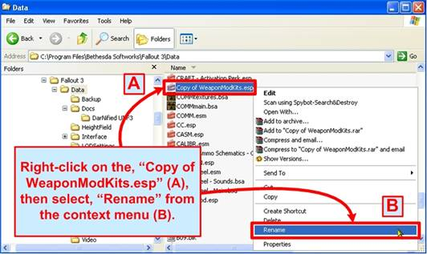
Now we need to re-name the copy to make it our Master file version.
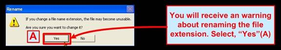
You will be presented with a warning about changing the file extension, which is a common windows warning. Simply select, “Yes” when prompted. The screenshot below shows the last part of the duplication process:

You will then be presented with the output; both a Plug-in and Master file that are identical at this point. The screenshot below shows the Master (A) and Plug-in (B):
With the file duplication part done, it’s time to launch the Fallout Mod Manager ( FOMM) to set our loading order for the new Master file as shown below:

Once FOMM is loaded, find the WeaponModKits.ESP (B) and WeaponModKits.ESM (A) versions of the mod in the list and ensure that both of them are Checked/Selected to load. The screenshot shows how FOMM will look when first loaded after the split, showing the ESP (B) is still checked (as it was before), while the new Master we just created is not yet checked (A) as shown below:

Here you must also ensure that the Master (ESM) version loads Before the Plug-in (ESP) version as this is a Fallout3 requirement. The recommendation is to move the Master (ESM) higher-up in the load order before all other Plug-ins, and load the Plug-in (ESP) version of Weapon Mod Kits somewhere below the Masters. With that done, close FOMM and load FO3Edit. Your new load order with the Weapon Mod Kits.esm loading before the Weapon Mod Kits.esp should be visible in FO3Edits as shown below:

To load just the Master and Plug-in, first Right-click in open space (A) and select, “None” from the context menu as shown above, and then check-off just the Weapon Mod Kits.esp and Weapon Mod Kits.esm files (C), and click, “OK” to load them into FO3Edit. This will load just the two Weapon Mod Kits files and the Fallout3 masters into FO3Edit as shown below:

Note that both our Master and Plugin version of Weapon Mod Kits is loaded and ready for conversion (A). The loader confirms a successful boot-up in the Messages Tab (B), indicating we are good to go for the conversions. Next we need to set the Record Flags to ESM (or Master) as shown below:
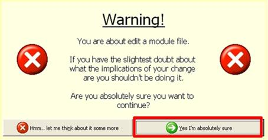
With the File Header block of Weapon Mod Kits.esp selected (A), Right –click in the open space next to the, “Record Flags” section (C) which will render a small context Menu. Select, “Edit” (D) from this small menu to add the ESM Master flag, which effectively converts the Plug-in into a Master. Before you can proceed however, you will get a warning message from FO3Edit about changing the mod’s contents. This is normal and provided for your protection. Simply select, “Yes” (A) to continue.

The screenshot below shows you the Flags menu that is rendered:
This, “Edit Value” menu shows you all of the known (and unknown) flags available for setting in a Fallout3 mod file for Record Flags. Many of the flags are known and can be selected, while a few still remain unknown. The only flag we care about is the, “ESM” flag (A), which you should check-off and then click, “OK” (B) to accept the new flag values.
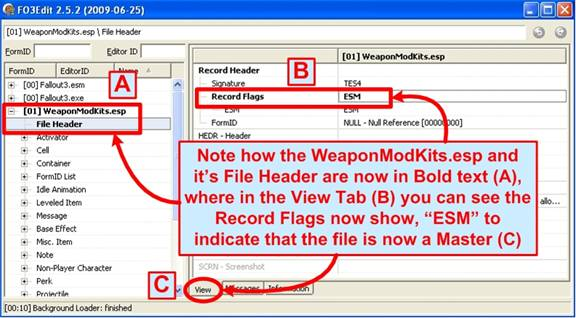
Once done you will be presented with the outcome as shown below, which now has the Weapon Mod Kits.esp entry and its File Header in Bold text (A) in the Left-hand Panel, indicating the change. In the Right-hand View Tab (C), the Record Flag row is now also in Bold text with the new, “ESM” flag now populated with it (B) as shown below:

Next we need to add the new Master version of Weapon Mod Kits (ESM) into the Plug-in version (ESP) as a master file reference, so that the Plug-in references the Master. This will allow the Plug-in (ESP) to use the Master (ESM) records going forward. The screenshot below shows you the first step in the process of adding a Master reference:
Note that we’re changing the File Header section just as we did when adding the ESM master flag, but this time we Right-click in the Master Files row (B), and then selecting, “Add” from the context menu.

This will create a new, blank Master File reference in the Weapon Mod Kits Plug-in that you can now assign to our new Master file as shown below (D), which we can then modify as needed. For our example we need to assign the new master file entry to Weapon Mod Kits.esp. To make the change simply Right-click in open space to the right of the, “MAST – Filename” entry (B), which will render a small context menu. Then select, “Edit” (C) as shown below:

Clicking Edit will open a, “Edit Value” window, allowing you to type-in the name of the Master file you want to assign as the reference (A). Click, “OK” when done (B) to save the reference, which will take you back to the View Tab.
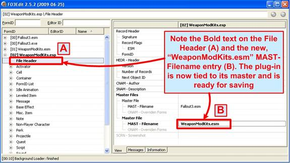
You should use the same case that the master file does, in this case, “WeaponModKits.esm” to ensure that there are no conflicts. And with that we’re done! Note that the WeaponModKits.esm is listed next to the, “MAST – Filename” entry (B), and that the File Header also has Bold text (A) indicating the change as shown below:

And for the final step, you need to save the changes. Use, “Alt-S” or close FO3Edit to present the Save Files window as shown below:
With this, you now have a Master/Plug-in version of Weapon Mod Kits, and the process works exactly the same for any mod that you want to split. You can change the esp file extension to ESM, then open and save it with the GECK and it will tick the ESM flag on, but won't produce ONAM's like FO3Edit will which are needed for any overrides to Fallout3.ESM's references. Unless your Plug-in has no CELL and/or WRLD group, you're better off using FO3Edit.
Note:An .esp can be the master of another .esp.
Note:If you have a Plug-in with multiple masters, you'll have to edit your GeckCustom.ini "bAllowMultipleMasterLoads=1"
Note:The GECK won't edit .esm's, so you have to ESP'ify, edit in GECK, then ESM'ify.
6.7 Comparing Two Versions of a Mod
One of the common tasks that mod authors face is to compare two versions of their own mods, either during construction or in subsequent updates. There are also times when mod authors encounter difficult to solve problems with a new version of a mod, and need to revert back to a previous backup. The FO3Edit compare function can provide a valuable and convenient way of copying data from one version of a mod to another, without having to sort through records that don’t belong to their mods. Whatever the case may be, this section is devoted to teaching you how to compare two versions of a mod file, and how to copy records over if the need arises.

For this section we feature Quarn’s Unofficial Fallout3 Patch, which has helped to resolve countless bugs in Fallout3 and has improved the gaming experience for thousands of modders. To start the action, launch FO3Edit and select One of the two mod files that you wish to compare as shown below:

As shown above, by Right-clicking in open-space in the Master/Plugin selection window (A), you will render the selection menu (B) where you can, “Select None”. This will un-check everything on the list. Then select just One of the two mods (C) and Click “OK” to load it (D). The screenshot below shows the result:
Here we have just One of the two mod files loaded along with the Fallout3 master files it depends on. We will need to hide these master files from view so that we are Only looking at the mod file that we want to compare.

To hide the master file references from view, we need to select each one of them in-turn with a Right-mouse click (A), which will present the main context menu. There you can select, “Hidden” (B), which is the last option on the list as shown below:
You won’t see any outward-change in the in the FO3Edit view afterwards, but you can confirm that they are marked as hidden by Right-clicking on them again – you will see a Check-mark next to, “Hidden” menu option indicating that they are hidden (from filters).

Next we need to load the other version of the Unofficial Fallout3 Patch mod file we’re comparing (the new/current version). You can do this by Right-clicking on the loaded-version of the mod (A), which will present the main context menu. Select, “Compare to…” from the context menu (B) as shown below:
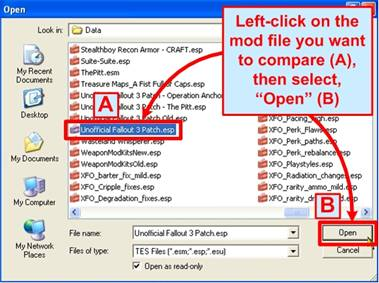
Selecting “Compare To” will present the, “Open” window as shown below, where you can select the current version of Unofficial Fallout3 Patch (A), and then, “Open” (B) to load it into FO3Edit as shown below:
The “Compare To” version of the mod is loaded as read-only into FO3Edit, so you will not be able to make any changes to it, but you can copy from it into the version of Unofficial Fallout3 Patch that we loaded into FO3Edit at boot time. You can change the order and load either/any version of the mod first, so that you can edit/copy records into whatever version you loaded.
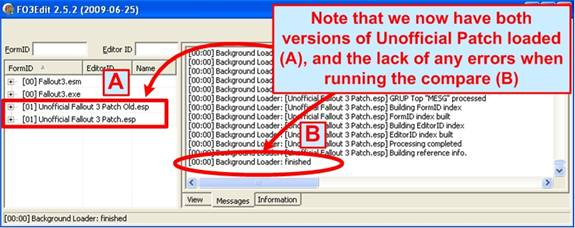
Once the Compare To function loads the other version of the mod as read-only into FO3Edit, you will see a view similar to the one below. Note the two versions that appear together in the Left-hand panel (A), and no errors noted in the Messages Tab (B):
With both versions of the mod now loaded with the Compare To function, the last step is to apply a Filter to find the changed records between them. Note that with the Fallout3 master files now listed as, “Hidden”, they will not show up at all after we apply the filter – which is exactly what we want.
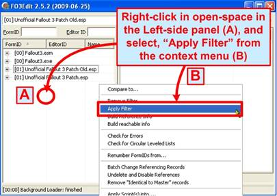
To apply a Filter Right-click in open-space (A) in the Left-side Panel to render the main context menu. Click, “Apply Filter” (B) to open up the Filter menu as shown below:

The main Filter window will render, where you can select the Mod Comparison Filter Settings as shown in the screenshot below:
Selecting the, “By conflict status for this particular record” (A), “Identical to Master” (B), “Override without Conflict” (C) and “Conflict status inherited by Parent” (D) sets the Mod Comparison Filters. You can then select, “Filter” (E) to apply the filter.

The Mod Comparison Filter should process quite quickly in most cases, unless you’re working with a very large mod file. The screenshot below highlights the status bar, which will tell you how far along the filter operation are towards completion:

Once done, the screenshot below illustrates the result. Both versions of the mod (at the top level) have Yellow backgrounds in the Left-Side Panel (A), indicating that they are not identical (of course). In the Message Tab we see that now errors were encountered by the Filter (B), along with some statistics:
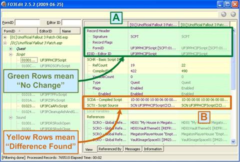
Opening one of the mods in the Left-Side Panel and selecting a record highlights the similarities where they are identical between the two mods with Green backgrounds (A) and records that are different with Yellow backgrounds (B).
At this point we are done with the comparison. You can browse through the Unofficial Fallout3 Patch records between the new and old versions, and compare the differences at will. If you don’t need to make changes, you can simply close FO3Edit when done.

If however there is a need to copy records from one version of the mod to the other, the process below will guide you through the steps. There are a few limitations to be aware of, such as you can’t drag-n-drop records from the version you loaded at boot time into the version you loaded with the “Compare To” function, but you can still copy from that version as shown below:
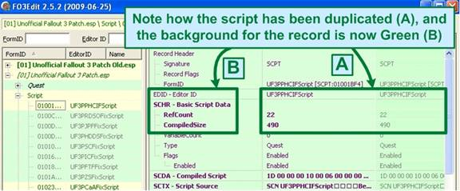
Here we Left-click-and-hold the record we want to copy with the mouse (A), and drag it horizontally to the mod we loaded when FO3Edit booted-up (B). Dropping the record into the row will copy that record (and all of its attributers) into the other mod. The screenshot below shows the results, with both sides now identical (A) and the background of both now Green (B) indicating they are indeed duplicates:

The screenshot below illustrates how FO3Edit will prevent you from drag-n-dropping records from the loaded version of Unofficial Fallout3 Patch into the “Compare To” version (which is loaded read-only). Note how when trying the drag-n-drop, you get a blocked-circle (B), indicating that you can’t drop records into the read-only version:
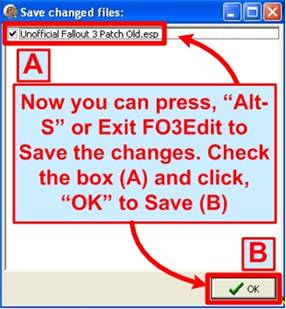
When you’re done making changes, you’ll need to save them. You can either close FO3Edit or press, “Alt-S” to render the Save Changed Files window:
With that, we’re done with mod comparisons and updates! Of course you should not change the Unofficial Fallout3 Patch as that is for Quarn to do, but there is no harm in experimenting with the mods to learn the process (just make sure to have a backup of the files before you do!).